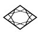
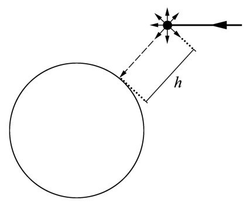
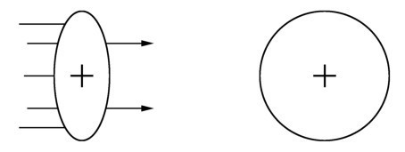
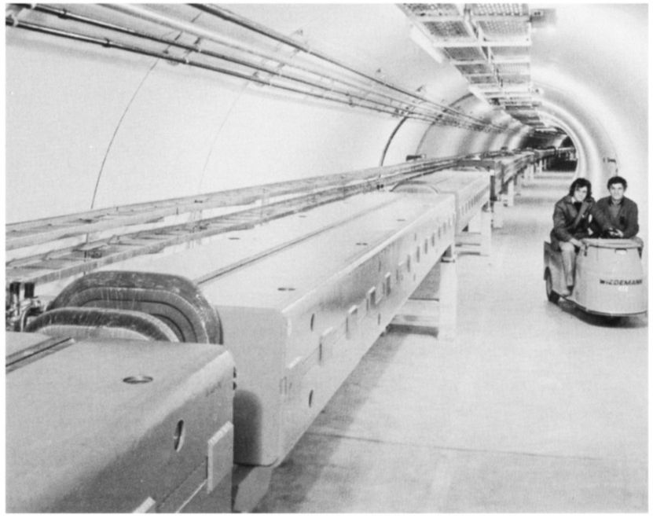

第十二章次日上午，我们这几个小学会的成员按惯常的时间聚在爱因斯坦的寓所。当我到达时，牛顿和我们的主人已经在那儿了。爱因斯坦正在抽第一支雪茄，并不是特别好的那种；他指指隔壁，牛顿正在那里准备我们的早点。
爱因斯坦： 牛顿刚才为今天的讨论会出了个题目。昨天我们详细讨论了时间，今天的主题可能是空间。牛顿确信他找到了与时间延缓相关的反例。我还是让他自己对你讲事情的究竟吧。
此时牛顿出现了，手里提着茶壶。
牛顿： 哈勒尔你已经来了，好得很。我们终于可以开始了。我想请诸位考虑我昨天遇到的一个问题。我已经把这个问题告诉爱因斯坦了，它与时间延缓有关。
哈勒尔： 为什么不呢？解决一个难题胜过听一堂课，即便是爱因斯坦上的课。
我完全明白爱因斯坦同意我的观点，就把话说得有点无礼。
牛顿： 请允许我回到μ子问题并做另一个思想实验来说明我所关切的事情。在大气上层由宇宙辐射产生的μ子大多数以接近光速的速度穿越空间。我们知道时间延缓是μ子终能到达地球的原因，否则的话，μ子很短的寿命会使人以为它们在抵达地球之前就衰变了。举例来说，μ子以某一速度运动，其γ因子为20。从一个静止的观察者所处的参考系来看，运动的μ子比静止的μ子存活的时间长20倍。假设μ子产生于9千米高处宇宙粒子与原子核之间的碰撞，然后垂直向下朝地球表面运动。由于时间延缓效应，它还没有衰变就到达地面。为了简单起见，我们假定μ子在抵达地面的瞬间衰变掉了。
牛顿说最后几句话时，向我投来询问的目光。他对此似乎不太肯定。我给予了回答。
哈勒尔： 观察那些刚到地面就衰变了的μ子对我们来说毫无问题。的确，只有极少量的μ子恰好在地球表面衰变。许多μ子在到达地球表面之前就衰变了，其他μ子在衰变之前已进入地下。有些μ子因与原子核碰撞而减速，然后在差不多静止状态时衰变掉了。不管怎样，我对你的假设没有异议。
牛顿： 很好。我之所以选取9千米的高度是因为寿命刚好1.5微秒且γ因子为20的μ子在衰变之前恰好能在空间穿行9千米。如果你将1.5微秒乘以20再乘以光速（300 000千米/秒），你就得到9千米：
1.5×10-6 ×20×300 000=9.
但是我的问题来了：设想一个观察者以与μ子相同的、接近于光速的速度穿越空间。我们假设爱因斯坦本人就是那个观察者得了。

图12.1 μ子在海拔高度h =9千米处产生并以对应于γ=20的速度（即接近于光速）垂直向地面运动。地球上的观察者在μ子撞击地面并衰变之前测量到它的飞行时间为30微秒。在其自身的参考系里面，μ子具有的寿命是用30微秒除以值为20的γ因子——1.5微秒。因而与μ子一道旅行的观察者也会在μ子撞上地球之际看到μ子衰变，但是他记录的μ子寿命为1.5微秒。
爱因斯坦 （笑着）： 就这样吧。如果对于追求真理有益，我准备好了以接近光速的速度在空间穿行。
牛顿： 好的。那你就和μ子一道向地面运动；确切地说，μ子相对于你静止，而地球正以接近于光速的速度移近——此速度由γ因子取值20来定义。相对于爱因斯坦静止的μ子发生衰变，其寿命为1.5微秒。这期间它不会移动很远；1.5微秒乘以300 000千米/秒恰好等于9千米的二十分之一，即0.45千米。μ子将没有机会抵达地面。矛盾就在这儿：第一种情形，μ子在空间穿行了9千米；第二种情形，它只移动了0.45千米。所以我一定在哪儿犯了错误，因为两段距离不可能同时正确。其中之一必定是错的。
爱因斯坦： 亲爱的牛顿，我不认为你犯了错误。让我们更仔细地研究一下你的问题。有一件事是清楚的：μ子在空间某个确定地点衰变，比如说，就在它撞击地球的地方衰变。这一事件是客观事实，它不依赖于观察者。如果μ子刚好在地面衰变，观察者不论是静坐在撞击点旁边的椅子上还是以接近光速的速度在空间穿行，都会注意到它。因此我认为：对于静止的观察者和与μ子一同运动的观察者而言，μ子都恰好在到达地面时衰变了。
牛顿： 爱因斯坦，原谅我打断你的话。很显然我没有把自己的意思表述清楚。我只是强调，你作为随μ子运动的观察者，将不会看到μ子在地面衰变。你会看到它仅仅飞行了0.45千米之后就衰变了，距离地球8千米还多呢。
爱因斯坦： 我理解你的论述；然而，你得出的μ子在8千米以上的高度就已衰变的结论是不对的。从你指派给我的有利位置——观察者随μ子一道运动——来考虑问题：如同静止的观察者一样，我会记录到μ子抵达地面时的衰变。我们明白，μ子仅行进了0.45千米就到达衰变地点。我与你在这一点的意见是一致的。可是，我的明确论点在于：时间延缓意味着时间依赖于观察者的运动状态。然而，我们还没有将空间引入这一论断，现在我们必须做了。我坚持认为，观察者运动状态的改变意味着空间结构的变化。更准确地说，空间将沿着运动方向收缩；收缩比率就等同于描述时间延缓的γ因子。
在我们的特定情形里，当我随同μ子在空间穿行时，μ子的产生地点与地面的距离看起来不是9千米，而是9千米除以20，即0.45千米。该距离正好是速度约为300 000千米/秒的μ子在其1.5微秒的存活时间内所能及的。
哈勒尔： 相对论不仅主张一个适当的γ因子延长了时间，它还意味着相同的因子缩短了空间，即空间收缩。只要两者同时发生，我们就能确定光速在所有的参考系都是普适的。于是我们才能确信对发生于相同时空点的事件——比如μ子到达地面并在那里衰变——所做的描述在所有的参考系中都是相似的。
就在我说话的时候，牛顿突然站起来奔向窗户。他注视着繁忙的街道。
牛顿： 爱因斯坦，你究竟对时间和空间做了什么？开始，你改变了时间的流动并使之依赖于观察者；现在你又建议以相同的低调方式处理空间。这让我觉得作为我的《原理》一书主题的绝对时空实际上已经荡然无存了。时间和空间是相对的，依赖于观察者——一种令人震惊的思想。
哈勒尔： 艾萨克爵士，我能理解你为什么不喜欢爱因斯坦的部分结果。但那实际上不是他的过失。他既没有改变空间，也没有改变时间；他仅仅是发现了我们先前并不了解的时空新面貌。时间延缓与空间收缩是早已得到实验证实的事实，它们是光速普适性的直接后果。
牛顿： 我意识到了这一点。我们毕竟不是一伙形而上学的哲学家，而是自然科学家。唯一重要的是实验事实，事实在爱因斯坦你那边。不过我仍有一件事不能理解。空间距离是用尺子测量的。就说这把30厘米长的直尺吧，它的长度怎么会依赖于观察者的运动状态呢？如果我的理解正确的话，对于与我们所考虑的μ子一道在空间穿行的观察者来说，这把尺子就不再是30厘米了，而是30除以值为20的γ因子，即1.5厘米。
爱因斯坦： 只要直尺指向我运动的方向，你说的就是对的。假设我就像μ子那样朝地球表面降落。空间收缩仅适用于观察者运动的方向。但愿这一实验仍旧是个思想实验——否则的话，实验结果一出来我也就活不成了。
牛顿： 几天前在剑桥研究原子物理的时候，我了解到诸如组成这把直尺的物质的稳定性最终取决于原子的稳定性。如果我把10亿（109 ）个原子排成行，我得到10厘米的长度。该长度不随时间改变的原因只不过是那些原子的尺寸具有普适性。不论我们是在地球这儿还是在一个遥远的星系观察氢原子，结果都是一样的。氢原子的结构和半径在任何地方都不变。这一普适性在我看来非常类似于光速的普适性。作为一个快速运动的观察者，爱因斯坦断定直尺不再是30厘米而是只有1.5厘米长了，但我从一个原子物理学家的角度不能领会这一点。直尺的长度是由它所包含的原子数量决定的。要获得30厘米的长度，我得把30亿个原子排成一行。如果考虑到我已排成行的原子数目肯定不会依赖于观察者的运动状态，你们怎么指望我将尺子收缩呢？
爱因斯坦朝我打了个手势，建议我来回答。
哈勒尔： 原子的数目当然不变。物质不会以那种方式产生或湮没。艾萨克爵士，你的问题有个简单的答案：原子的半径——比方说，我们知道氢原子在正常条件下半径为10-8 厘米——并不是个不依赖于观察者运动状态的常量。空间收缩也会体现在原子尺度上。原子似乎在它们运动的方向上被压扁了。
让我们回到所举的例子。快速运动的直尺里的所有原子好像沿它们的运动方向被压缩了，我们假设其γ因子为20。这些原子不再是球形的了，而是椭球形的，几乎成碟状。
一个不持偏见的观察者现在也许会问原子到底是什么形状的。它是球形的还是碟状的？答案是两者兼而有之。其形状依赖于观察者的运动状态。空间的结构以及与之相关的原子及其组成的世间万物的形状皆依赖于观察者。
牛顿： 你刚才说组成直尺的原子会收缩。可是，我们能证实这一点吗？一个物体的收缩仅仅意味着它相对于一个先前定义好了的标度的收缩。如果物体和标度都收缩，那就什么效应都看不到了。
哈勒尔： 如果我们总是用同样的标度从事测量的话，我会同意你的意见。但在快速运动的系统里那是做不到的。我提醒你，我们是借助于光信号传播一段距离所用的时间乘以光速来测量那段距离的。当我们谈及空间收缩时，我们暗指所有的空间两点间的距离都是以这种方式测量的。
牛顿： 行了，哈勒尔，我明白你的意思了。我忘记了距离是由光信号的传播时间来测量的。
爱因斯坦： 哈勒尔，我们已经讨论了时间延缓的许多检验，当今似乎没有任何严肃的物理学家对此效应表示怀疑。但是空间收缩的情况如何？这一效应已被实验证实了吗？我并非怀疑自己的理论的成功，然而你知道不管理论有多么美妙绝伦，实验才是检验它的唯一标准。
哈勒尔： 如同时间延缓，空间收缩只能用快速运动的体系来检验。可供我们用来做这件事的唯一物件是快速运动的原子核或粒子，比如电子或质子。我们知道质子是三维物体，可以被看作小球体；但质子的半径与氢原子这个最简单的原子的半径相比是极小的：它是后者的万分之一大小。现在我们使一个质子以近乎光速的速度运动，去撞击另一个质子或原子核。这样的碰撞过程相当复杂，我就不在这里细说了。但我们很明白，该过程的具体细节依赖于参与作用的质子呈球状还是碟状。
人们在CERN进行过一些此类实验，结果是明确的：质子表现得如同碟子一般，运动速度越快形状就越扁，正像你的理论所预言的那样。

图12.2 一个快速运动的质子与一个静止的质子碰撞。就相对于靶质子静止的观察者而言，飞来的质子看起来如同一个压扁了的椭球：它的质量分布在运动方向上似乎被压缩了。
顺便提一句，如果不是时间延缓和空间收缩的缘故，CERN的加速器就不能运作。相对论效应是加速器建造的要素。因此，至少就设计和建造粒子加速器而言，相对论已经成为一门工程科学。
爱因斯坦显得十分宽慰。他取出一瓶纳沙泰尔白葡萄酒和三个玻璃杯。

图12.3 在CERN储存SPS（超级质子同步加速器）的隧道的部分示意图。质子束在环绕着磁铁的真空管内运动。磁铁产生磁场，将质子束束缚在环状的束流管内运动。为了建造这样的加速器，人们不得不考虑相对论效应，尤其是时间延缓和空间收缩。（承蒙CERN惠允。）
爱因斯坦 ：请别以为我曾经怀疑过相对论。对一个物理学家来说，没有什么比他的想法得到成功的验证更令人心满意足了。1904年里，我花了无数的时间坐在写字台旁思考时间和空间，70年之后，同样的这些想法被工程师们付诸实践了。结果证明它们是建造长程粒子加速器所必不可少的。我认为我们应该为有关的进展干杯。来，为牛顿先生你所缔造的科学干杯！
虽然刚到11点，但我们决定结束聚会。我们觉得该沿着阿勒河散散步了。这些日子瑞士有幸处于夏季的好天气。我们沿着河边漫步，直到发现一个诱人的饭馆才驻足共进午餐。